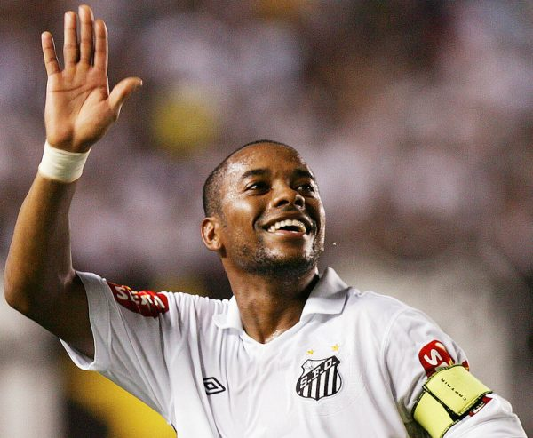
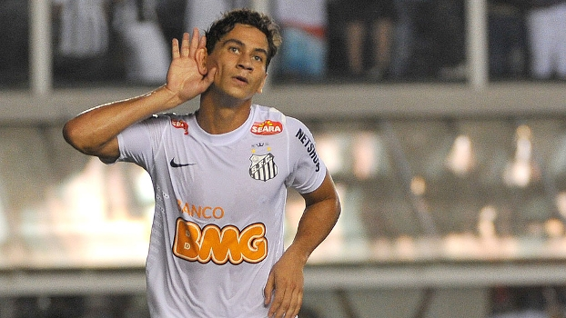

Ídolos Eternos do Santos
O Santos é uma fábrica de craques. Ao longo da sua história, o Peixão revelou gênios da bola que encantaram o Brasil e o mundo. Conheça alguns dos maiores ídolos que eternizaram seus nomes na Vila Belmiro:
👑 Pelé – O Rei do Futebol
Edson Arantes do Nascimento, o eterno Pelé, chegou ao Santos com apenas 15 anos e mudou a história do futebol para sempre. Com suas jogadas geniais e faro de gol, conquistou 2 Mundiais Interclubes, 2 Libertadores e mais de mil gols. Para o mundo, ele é o Rei. Para a Vila, ele é eterno.

🔥 Pepe – O Canhão da Vila
José Macia, o Pepe, foi o maior parceiro de Pelé no ataque. Dono de um chute fortíssimo, marcou época com seu futebol alegre. Ganhou títulos nacionais, Libertadores e Mundiais, sendo lembrado como um dos maiores ídolos do clube.

⚡ Robinho – O Rei das Pedaladas
Robinho surgiu em 2002 para liderar uma geração inesquecível: os Meninos da Vila. Com seu drible desconcertante e pedaladas, conquistou o Brasileirão de 2002 e fez história ao devolver o Santos ao topo do futebol nacional após 18 anos.
🌟 Neymar – O Menino de Ouro
Revelado em 2009, Neymar encantou o mundo com seu talento e alegria. Conquistou a Copa do Brasil de 2010 e foi protagonista na Libertadores de 2011, devolvendo ao Santos a glória internacional após quase 50 anos. Um dos maiores da nova geração.

🎩 Paulo Henrique Ganso – O Maestro
Cerebral e elegante, Ganso foi o maestro da geração de Neymar. Com sua visão de jogo diferenciada, encantou os torcedores e foi peça-chave na Libertadores de 2011. Um dos meias mais talentosos que passaram pela Vila Belmiro.
